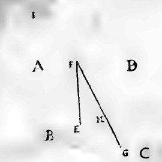
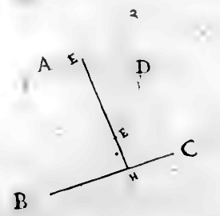
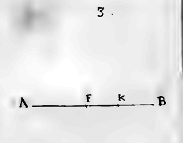

Liber Primus · Axiomata, Petitio & Lemmata I–II¶






DE LINEIS RECTIS SE INVICEM SECANTIBVS STATICA CONSTRVCTIO. LIBER PRIMVS.
AXIOMA I. Cuiuslibet magnitudinis grauis, aut plurium simul gravium, vnicum est centrum grauitatis.
AXIOMA II. Si duo pluraue pondera in communi eorum centro grauitatis colligantur, idem prorsus efficiunt momentum ac prius diuisa.
PETITIO. Postuletur in quouis dato puncto appendi posse pondus quodlibet ad datum pondus datam habens rationem.
LEMMA I. (tab. 1. fig. 1, 2; in marg. 6. Arch. æquipond.) Si in extremis rectæ AB appendantur duo pondera mA, mB, erit eorum centrum grauitatis punctum F ita diuidens rectam AB, vt sit pondus mA ad pondus mB reciprocè vt distantia FB ad distantiam AF. Corollarium. Ex his liquet, positis in A, B ponderibus reciprocam rationem habentibus distantijs, centrum grauitatis fore ipsum F.
LEMMA II. (tab. 1. fig. 3) Eadem ratione plurium in eadem recta AB dispositorum ponderum commune centrum grauitatis per binorum compositionem inuenitur.
f. 0019 · p. 2